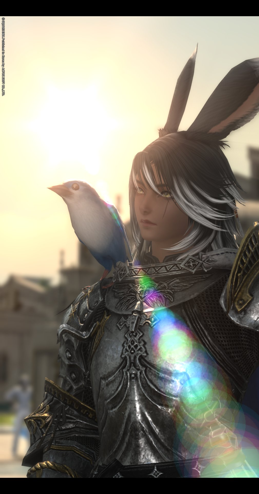

        <div class="ff-char-grid">
                <div class="ff-char-container">
                      <div class="ff-speech-bubble">""앞장서겠습니다.""</div>
                      <div class="ff-char-card" onclick="openQuestModal('키에르 디트-마루크', '남성 / 라바 비에라 / 나이트', '항상 앞장서는 탱커. 23세에 모험을 시작해 여기까지 왔다.', 'images/Cheirprofile.jpg')">
                          <div class="ff-char-header">
                              <div class="ff-char-name">키에르 디트-마루크</div>
                              <div class="ff-char-job">
                                  
                                  <span>나이트</span>
                              </div>
                          </div>
                          <div class="ff-char-img-holder">
                              
                          </div>
                      </div>
                  </div>

           <div class="ff-char-container">
              <div class="ff-speech-bubble">"뒤를 지켜 줄 거긴 한데 너무 돌아보진 말아줘. 나도 급할 땐 책등으로 혼내버린 단 말이야..."</div>
              <div class="ff-char-card" onclick="openQuestModal('시프 티오 세크렛', '남성 / 달의 부족 미코테 / 학자', '치유사이자 페르시안의 황자님. 파판즈의 첫째이지만 딱히 그렇게 보이지는 않는다.', 'https://i.imgur.com/9uWPiAO.png')">
                  <div class="ff-char-header">
                      <div class="ff-char-name">시프 티오 세크렛</div>
                      <div class="ff-char-job">
                          
                          <span>SCHOLAR</span>
                      </div>
                  </div>
                  <div class="ff-char-img-holder">
                      
                  </div>
              </div>
          </div>
        </div>

    <div class="ff-modal-overlay" id="questModal">
        <div class="ff-quest-window">
            <div class="ff-quest-icon-wrap"><span class="ff-quest-icon">⚙</span></div>
            <h2 class="ff-quest-title" id="modalName">프로필 로딩</h2>
            <div class="ff-quest-illustration">
                
            </div>
            <div class="ff-quest-section">
                <div class="ff-quest-section-title">인적사항</div>
                <div class="ff-quest-section-content" id="modalStatus">-</div>
            </div>
            <div class="ff-quest-section">
                <div class="ff-quest-section-title">소개</div>
                <div class="ff-quest-section-content" id="modalDesc">-</div>
            </div>
            <div class="ff-quest-btn-zone">
                <button class="ff-quest-btn-confirm" onclick="closeQuestModal()">확인</button>
            </div>
        </div>
    </div>
